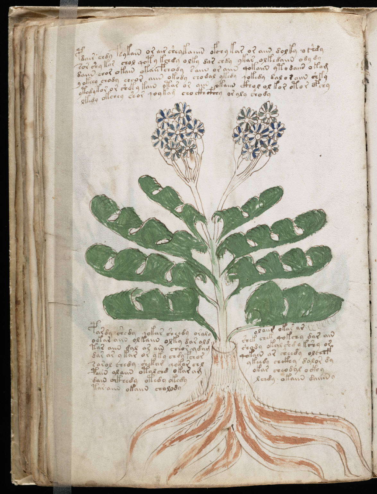

f39v
1pdair chdy fdykain or air sheykaiiin ofchy kar or aiin dol ky oshdy2sor shy kor chol qoty kchdy olky dor chdy ykar olkedaiin ody dy3daiin chor okain okaiifchody saiin or aiin qokaiin ytodaiin okom4y okeey chody cheor aiin okody chodal ykedy qokedy dal or aiin shky5ytedykor or sheky kain otar or aiin okaiin ckhol ol kor otor opchy6lkedy okchey shorqoy kam cho ckhcfhhy or aly shody7pardy shedy qokar sheedy oralyolaiir okar ar8oekar aiin olkaiin olky dar aldshek chek qokchy dar ain9tar aiin dal ar ain cheor ydamshody okal shdy kshy or10dar ar ykar or yky chdy fchorqokain ar sheedy olchef11sarol chedy shekam qokar chlykeedy chckhy dalor dy12paiin alaiin otal chd okar amokar cheodal ockhy13dain ockhedy otedy okedylchdy okaiin daiiiny14tar aiin okaiin cholody
